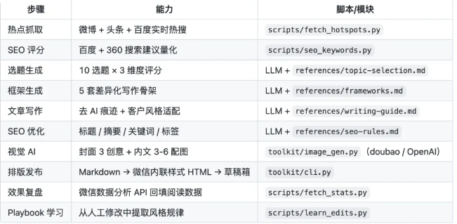
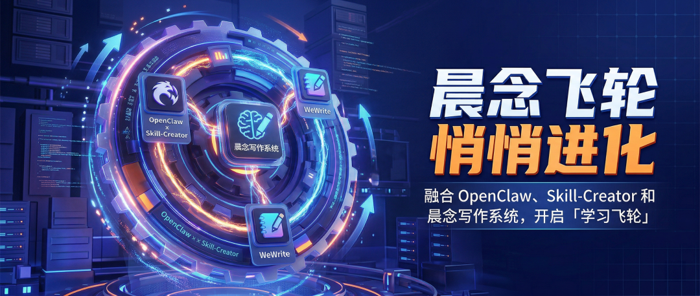
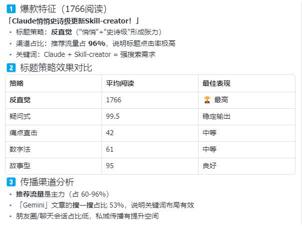

说实话，wewrite 这个项目我盯了很久。
GitHub 上 300+ star，功能列表看得人流口水——热点抓取、选题评分、7 层去 AI 痕迹、自动排版推送草稿箱。一套流程跑下来，公众号文章从 0 到发布，一句话搞定。
问题是：它太重了。

我只想移植两个功能：效果复盘、学习飞轮。结果翻了半天文档，发现这俩功能的设计思路很好，但实现方式跟我在 OpenClaw 上跑的写作系统对不上。
得改。
于是又了这篇晨念死磕 AI 的第 43 篇实战笔记。
今天用 skill-creator 这个神技，把移植过程完整复盘一遍。中间踩的坑、改的设计，全给你摊开。

先说结论：移植了什么
| 效果复盘 | ||
| 学习飞轮 |
学习飞轮是这次移植的核心价值。
它的逻辑很简单：你改了 AI 的初稿，系统记住你改了什么，下次写作自动应用。
比如你总是把"讲真"改成"坦白说"，系统学会之后，初稿直接写"坦白说"。改得越来越少，效率越来越高。
这才是 AI 写作的正确打开方式：不是替代你，是学会你。
说白了，原理是这样的
这套写作系统跑在 OpenClaw 上，核心是一个叫「晨念公众号写作系统」的 Skill。
就这么简单。
playbook 是你的个性化规则集，优先级高于风格库。每次复盘提取的规律，都会写入 playbook。
下次写文章，系统先读 playbook，把你总结的规律用上。
开搞前，先说说我踩的三个坑
坑 1：微信 API 权限问题
wewrite 的效果复盘功能，依赖微信数据分析 API。
我兴致勃勃地配置了 AppID 和 Secret，结果报错：48001 api unauthorized
查了半天文档，才发现——未认证订阅号没有数据分析 API 权限。
💡 踩坑点：如果你的公众号是未认证订阅号，数据 API 这条路走不通。别浪费时间配置了，直接用手动输入模式。
解决方案：改设计。
数据复盘改为手动输入模式。用户告诉我阅读数据，我写入飞书 Bitable。
虽然不能自动拉取，但核心功能不受影响。学习飞轮更是完全独立，根本不需要 API。
坑 2：硬编码问题
移植的时候，我随手把飞书的 app_token 和 table_id 硬编码到了 SKILL.md 里。
看起来没问题，直到用户问我："这些配置能改吗？"
我一看，傻了。改一个 token 要改三四个地方，还容易漏。
💡 踩坑预警：敏感配置千万别硬编码到流程文档里。一是维护困难，二是安全问题——一旦文档泄露，token 也跟着泄露。
解决方案：配置分离。
创建 config.json，把所有配置集中管理：
SKILL.md 里只写：从 config.json 获取配置。
坑 3：playbook 触发不完整
这是最隐蔽的一个坑。
我给「云撰」步骤加了 playbook 读取，但忘了给「惊雷」步骤加。
结果是什么？
playbook 里写着「反直觉策略优先」，但惊雷步骤没读到，还是按默认策略出标题。
💡 听晨念一句劝：规则文件的读取逻辑，必须覆盖所有使用规则的步骤。漏一个，规则就白写了。
解决方案：惊雷步骤也加上了 playbook 优先读取。
现在标题设计会优先应用 playbook 里的标题规则——反直觉策略、疑问式公式，都是基于数据复盘总结出来的。
Step 1：创建飞书数据表
效果复盘需要一个数据存储的地方。
飞书 Bitable 是现成的选择——结构化、可视化、支持 API 操作。
我创建了一个「微信公众号数据表」，字段包括：
这张表有两个用途：
- 数据复盘
：存储阅读数据，分析标题策略效果 - 学习记录
：存储修改对比，提取写作规律
Step 2：移植脚本
wewrite 的脚本写得不错，但有两个问题：
微信 API 权限限制（前面说过了） 数据写入的是本地 yaml 文件，而不是飞书
我重写了两个脚本：
sync_to_feishu.py：同步文章到飞书 Bitable
支持手动输入模式 自动从 config.json 读取飞书配置 支持新增文章和更新阅读数据
learn_edits.py：学习飞轮
对比初稿和定稿，计算 diff 分类修改类型（用词替换、段落删除、结构调整...） 输出到本地 lessons/ 目录 + 飞书 Bitable 每 5 条学习记录触发 playbook 更新
Step 3：更新 SKILL.md
SKILL.md 是写作系统的核心流程文档，也是 OpenClaw 识别 Skill 的入口。
这次更新了三个地方：
步骤7 归档：增加飞书同步
步骤8 晨曦：拆分为两个分支
步骤2 云撰 + 步骤6 惊雷：增加 playbook 优先读取
Step 4：创建 playbook.md
playbook 是这次移植的灵魂。
初始规则从哪来？
我把最近一个月的阅读数据导入了飞书 Bitable，分析了标题策略效果：
| 反直觉 | ||
结论：反直觉策略优先。
写入 playbook：
下次写文章，系统会自动应用这些规则。 
跑起来！
移植完成，验证一下：
测试 1：数据复盘
测试 2：学习飞轮
测试 3：写作流程
恭喜，跑通了！
这套架构的优势
1. 配置分离
敏感配置集中在 config.json，流程文档保持干净。
改配置只改一个地方，不会漏。
2. 规则优先级清晰
你的规则优先级最高，系统的规则兜底。
3. 学习闭环
越用越像自己，越改越少。
这才是 AI 写作的正确姿势。
最后，给大家参考下当前写作系统的目录
晨念公众号写作系统 v3.3.0 目录结构
希望对大家有所启发！
大家也可以去做起来！！